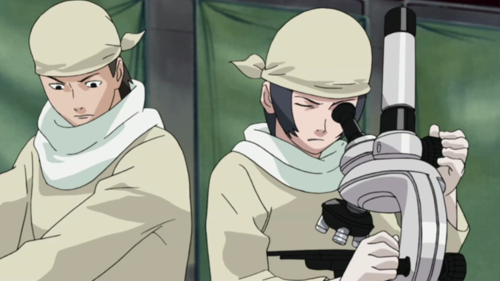
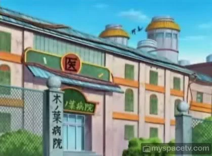
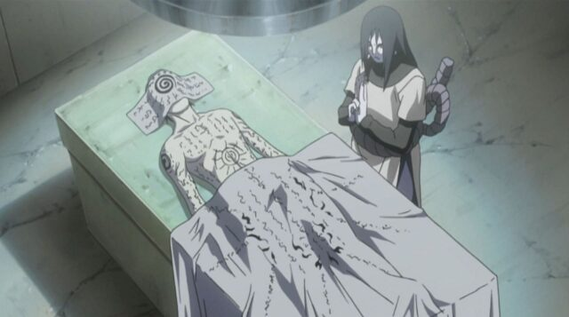

Kiyotaka Kaguya
Le scientifique fou
Qui est Kiyotaka Kaguya
Kiyotaka Kaguya est un ninja ambitieux et brillant de Kiri, déterminé à redorer l'image de son clan tout en explorant les limites de la médecine et du fuinjutsu. Fidèle et protecteur envers ceux qu'il aime, il cherche à rendre son village plus fort grâce à ses connaissances et ses innovations. Bien qu'il soit droit et persévérant, il peut être méfiant et inflexible, ce qui nourrit son obsession pour la perfection. Derrière son engagement, il porte un poids lourd et il est prêt à tout pour réaliser ses rêves.
.webp)
En soif d'apprendre
Curiosité
très, très curieux
Droit/Honnête
N'aime ni les menteurs ni les hypocrites
Sang froid
Depuis la perte de son cousin il ne ressent quasi rien

Routine Parfaite
apprentissage, entraînement
Protecteur
Est toujours là pour sa famille/village
Kiyotaka a grandi à Kiri avec son père, un shinobi respecté qui lui a transmis sa passion pour le ninjutsu et la médecine. Dès son enfance, il montrait un grand intérêt pour la médecine, maîtrisant les bases bien avant d’entrer à l'académie. Il passait son temps à étudier, lire et expérimenter. Son cousin, avec un caractère différent, plus aventureux et impulsif, partageait une relation très forte avec lui. Ensemble, ils s’entraînaient, se défiaient et rêvaient de devenir des ninjas capables de protéger leur village.
"Je vais soulager mon père et mon clan mais en traçant ma propre voie avec mes propres mains !"
-Kiyotaka Kaguya

Lors d’une mission dans le Pays de la Pluie, Kiyotaka et son cousin ont découvert un hameau où ils ont vu un homme accompagné d’un enfant. Leur avancée a été stoppée par l’arrivée de trois ninjas. Restant cachés pour ne pas être repérés, ils ont assisté impuissants à l’attaque des assaillants sur le hameau. Ces derniers ont pillé le village et tué les habitants. Kiyotaka voulait intervenir pour aider, mais son cousin l’a convaincu qu’ils n’étaient pas assez forts pour agir. Après leur retour, cet événement a profondément marqué Kiyotaka. Il s’est promis de devenir plus fort, à la fois comme ninja et comme médecin. Avec son cousin, il s’est lancé dans un entraînement rigoureux sous la supervision de leur père, montrant rapidement un talent exceptionnel pour le Suiton, son affinité naturelle. Son père, voyant son potentiel, l’a encouragé à continuer dans cette voie.
"Ce qu'on risque révèle ce qu'on vaut."
- Kiyotaka Kaguya

L'examen de l'académie est arrivé deux ans plus tard. Bien que stressé, Kiyotaka a révisé toute la nuit avec son cousin et ses amis pour se préparer. Le jour de l’examen, il a tout donné et a réussi avec brio. Mais sa joie a été de courte durée lorsqu’il a appris que son cousin avait perdu la vie pendant une épreuve. Cet événement l’a profondément affecté, ravivant sa volonté de se surpasser pour que plus jamais il ne perde quelqu’un de cher.
À partir de ce moment, il s’est investi corps et âme dans ses études, perfectionnant ses techniques médicales et cherchant à sauver des vies. Il s’est aussi intéressé au fuinjutsu pour développer des moyens de protéger le village, en créant des barrières et des sceaux puissants capables de repousser toute menace.
Au fil du temps, il est devenu un ninja-médecin renommé et talentueux, mais il ne s’est pas arrêté là. Il a créé un laboratoire clandestin où il pouvait pousser ses recherches plus loin. Il a travaillé sur des techniques médicales avancées et exploré des moyens d’améliorer les capacités des ninjas tout en développant des solutions novatrices pour allier médecine et ninjutsu.
Porté par la mémoire de son cousin et son ambition de protéger Kiri, Kiyotaka s’est fixé un objectif clair. Il voulait faire de son village un modèle de puissance et d’innovation. En honorant les valeurs de son clan, il veillait à ce que personne ne revive les tragédies qu’il avait connues. Il s’est dédié à cette mission avec détermination et une vision qui dépassait celle d’un simple ninja. Kiyotaka aspirait à transformer Kiri en un pilier de la médecine et de la technologie shinobi, capable de résister à toutes les menaces et de prospérer.
"La parole entraîne, l'exemple enseigne."
- Kiyotaka Kaguya
"La famille Kaguya"
Le Clan Kaguya (かぐや一族, Kaguya Ichizoku) est un clan de Kiri. Ce clan possédait un kekkei genkai permettant de contrôler la croissance des os du corps. Cela permettait de pouvoir utiliser leurs os pour se battre et même changer des os en armes tel qu'un bras en sabre ou la colonne vertébrale en fouet. De plus, leurs squelettes était bien plus résistant qu'un être humain normal en raison du fait qu'ils pouvaient contrôler le taux de calcium dans leur os. Ils étaient donc taillés pour le combat.
"Mes os sont une malédiction, ceux qui croiseront mon regard seront maudits"
-Kiyotaka Kaguya
Objectifs (Court terme) :
Au cours de sa vie de ninja, Kiyotaka souhaite rendre fier son père en devenant un pilier de soutien pour Kiri. Pour ça, il veut intégrer les scientifiques de Kiri pour rester fidèle aux traditions du clan. Kiyotaka veut aussi se faire des nouveaux amis en parlant à tout le monde, cherchant à tisser des liens et à élargir ses connaissances. Il veut aussi montrer que les Kaguya sont des gens bien et normaux, dans l'idée de redorer l'image de son clan.
Après, il envisage de rejoindre le service de renseignement de Kiri, avec l'ambition de le diriger un jour et de travailler avec les hauts-gradés du village pour protéger les habitants de toute menace. En partageant son savoir et travaillant en arrière-plan pour la sécurité de Kiri, il montre son envie de défendre son village et de contribuer à sa prospérité, et il est prêt à mettre sa vie en jeu pour ça. Kiyotaka souhaitait aider les personnes souffrantes de Kiri, il souhaitera bientôt rejoindre la section médicale afin de venir en aide au maximum de personnes possible. Cependant, il se rendra compte malgré lui que les méthodes utilisées sont trop classiques et ne peuvent malheureusement pas soigner correctement. Pour pallier à cela, il souhaiterait construire son propre cabinet médical afin d’aider à soigner les personnes qui ne peuvent être soignées avec l’aide des techniques classiques.

Objectifs (Moyen terme) :
Kiyotaka veut explorer les archives du village pour faire revenir d’anciennes traditions du clan Kaguya et restaurer son patrimoine culturel. Cela permettrait d’effectuer d’anciens rituels, de réutiliser de vieilles techniques oubliées et de reconstruire une bibliothèque Kaguya pour préserver cette mémoire historique. Cet objectif pourrait l’amener à parcourir le monde pour retrouver des parchemins et des artefacts qu’on pensait perdus pour toujours. Cela lui permettrait d’en apprendre plus sur le passé de son clan, de savoir pourquoi il fut écarté du village de Kiri et de comprendre réellement comment les choses se sont passées. Kiyotaka aspire à devenir un maître du fuinjutsu pour protéger Kiri. Il voit dans cet art du scellement un moyen de renforcer les défenses du village, en contrôlant le chakra des ennemis et en posant des barrières de protection avancées. Son objectif va au-delà de la simple maîtrise personnelle : il souhaite transmettre ces connaissances et former une nouvelle génération de spécialistes. En prenant des élèves sous son aile, Kiyotaka veut partager les subtilités du fuinjutsu, en leur inculquant la rigueur et la précision nécessaires. Ces jeunes ninjas deviendront les gardiens, En créant son cabinet de médecine, Kiyotaka commencera d'abord à développer son jutsu et des techniques de médecine et ensuite à apprendre à faire des prothèses. Il souhaitera acquérir la perfection, il deviendra dans le but de devenir un ninja médecin reconnu partout dans le monde shinobi pour ses exploits dans la médecine. Avoir des compétences infinies dans ce domaine en passant par l'implantation de pupilles à des simples blessures de guerre.
Objectif (long terme) :
Kiyotaka, brillant médecin et chercheur visionnaire, consacre sa vie à transformer Kiri en une puissance incontournable et un acteur majeur du commerce dans le monde ninja. Pour atteindre cet objectif ambitieux, il a établi un laboratoire clandestin dans les profondeurs de Kiri, situé sous une prison renforcée par un système de défense complexe en Fuinjutsu.
Il prévoit aussi de vendre ses découvertes, qu'il s'agisse d'armes biologiques, de techniques expérimentales ou de traitements avancés, sur le marché noir ou à d'autres villages, faisant de Kiri une plaque tournante technologique et économique. L'un des projets les plus ambitieux de Kiyotaka est d'expérimenter sur des cellules, pour fusionner les traits distinctifs de plusieurs clans et créer des capacités hybrides uniques. Par exemple, il pourrait travailler à combiner la manipulation osseuse des Kaguya avec la capacité de survie aquatique des Hoshigaki, ou associer la manipulation sanguine des Chinoike avec des techniques de genjutsu inspirées des Uchiha.
Même si ces recherches sont risquées et moralement discutables, elles visent à créer des soldats biologiquement supérieurs, pour transformer l'armée de Kiri en une force redoutable et révolutionner le potentiel militaire du village.


» Suiton«
» Hyôton«

» Taijutsu «
Le Suiton 水遁, Kiyotaka sera capable de créer des bulles d'eau dès son plus jeune âge. il voudra aussi devenir maître Suiton à l'avenir.
Le Hyôton est un Kekkei Genkai ce qui est la fusion du Suiton 水遁 et Futon 風遁, le Hyôton permet de manipuler la glace. Kiyotaka maitrise ce Kekkei Genkai et l'utilise afin de déstabiliser ses adversaires
Le Taijutsu (体術, signifiant littéralement : Techniques du corps) est l'une des trois branches de l'art du combat ninja avec le Ninjutsu et le Genjutsu. Assimilable aux arts martiaux réels, il comprend le combat à mains nues et le maniement des armes.
» Taille:
Kiyotaka fait 1m54
» Poids:
Kiyotaka fait 50kg
» Corpulence:
Kiyotaka possède une musculature standard
» Cheveux:
La couleur de cheveux de Kiyotaka est noir
Qualités Kiyotaka
- Droit
- Honnête
- Intelligent
- Fidèle
- Protecteur
- Persévérant
- Visionnaire
défauts Kiyotaka
- Condescendant
- Manipulateur
- Méfiant
- Impitoyable
- Rancunier
- Perfectionniste